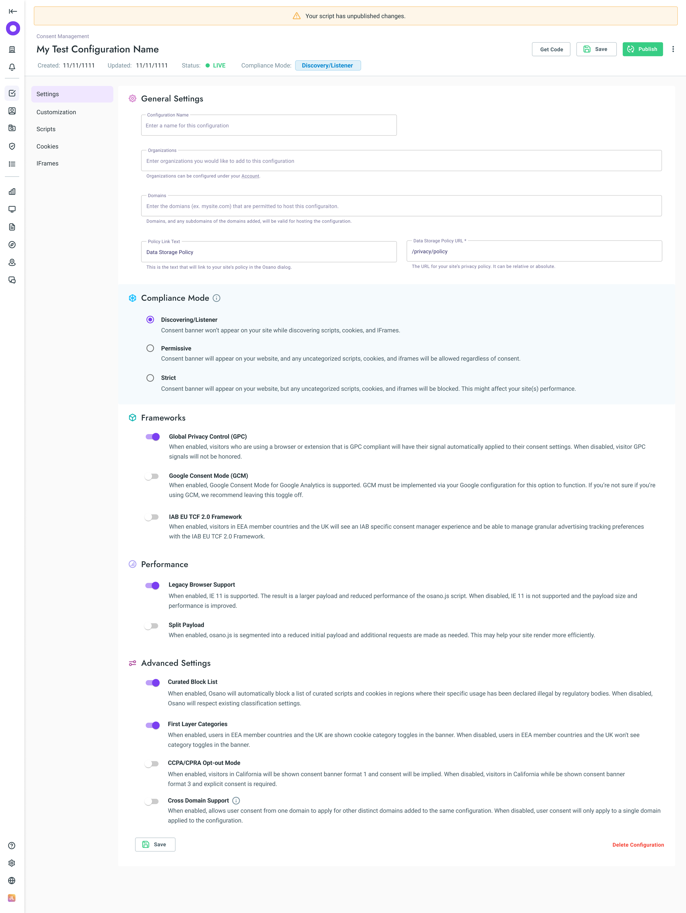
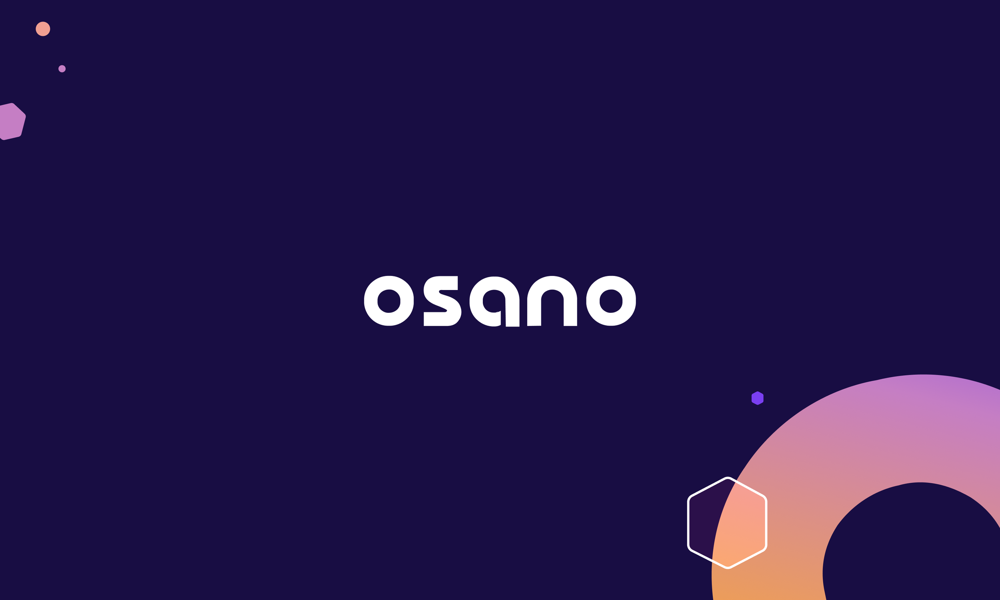

Osano
Osano is a leading data privacy platform that helps companies navigate the difficult task of staying compliant within an ever-changing landscape of global privacy regulations.
I would be happy to discuss the details in a private setting.

AI Assisted Classifications of Cookies and Scripts
The Problem
Implementing cookie consent tools was often a source of friction and anxiety for users. Between the technical complexity of cookie classification and the high stakes of legal compliance, the setup process felt long, tedious, and overwhelming.
The Goal
Streamline part of the onboarding experience by automating the categorization of cookies and scripts with AI to give confidence to users they were on the right track, and make it easier to use for future discoveries.
Outcome
- Faster Onboarding: Drastically reduced implementation timelines for new users.
- Smoother Sales Cycles: Eliminated technical friction during live demos, allowing the product's value to shine.
- Reduced Overhead: Significant decrease in support tickets related to setup and classification.

Screenshot not available at this time.
AI Driven Compliance Monitor
The Problem
Privacy laws are in a constant state of flux, making it difficult for fragmented teams to maintain site-wide compliance. This lack of synchronization often leads to accidental gaps, leaving companies vulnerable to legal risks whenever their websites are updated.
The Goal
Enable a "hands-off" monitoring mode that automatically scans for privacy gaps. The objective was to shift users from a state of constant manual checking to a "management by exception" workflow—reducing stress by only requiring action when a compliance check fails.
(Planned) Outcome
- Peace of Mind: Reduced customer anxiety through automated, persistent oversight.
- Revenue Growth: Drove new revenue streams by offering automated remediation tools that fix compliance issues instantly.
Screenshot not available at this time.
AI Intake and Automation of Data Subject Access Requests
The Problem
Processing Data Subject Access Requests (DSAR) is a massive operational burden, often consuming over 20 hours per request. This inefficiency is compounded by a high volume of duplicate or legally unnecessary requests, leading to thousands of wasted hours and significant overhead costs for the company.
The Goal
Streamline the DSAR workflow by auto-rejection for duplicates, jurisdiction-based rights management, and "one-click" integrations for deletion and summarization.
Outcome
- Operational Savings: Lowered the cost-per-request for our clients, providing immediate and measurable ROI.
- Competitive Advantage: Strengthened our market position and drove revenue by offering a more efficient, cost-effective solution than our competitors.